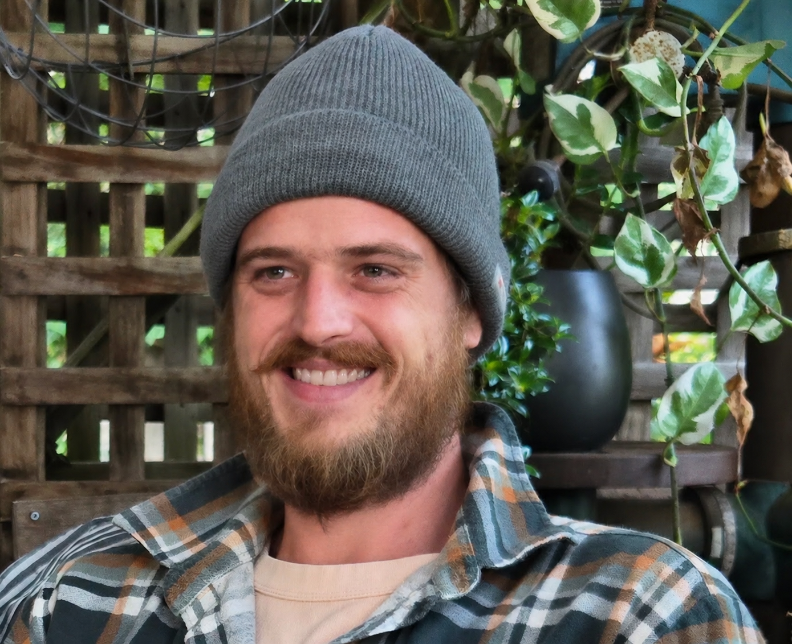

About Me

Proud Tasmanian, currently residing in the the north. Seeking employment in the field of Applied Technology to support my further studies.
Like many of my peers who are passionate about technology, I started off developing my understanding by pulling apart surplus electronics and learning how they work.
Similarly, many of my projects resemble the devices I have pulled apart; a mass of wires an odd PCB and some housing that never get put together properly.
This site serves to document the projects that have resulted in significant learning opportunities in embedded systems and hardware design.
These projects are in an ongoing state of development, and I will continue to update this site as I learn complete more project milestones.
Education
University of Tasmania
- Graduating in December 2026 with a diploma in Applied Technology; Specialising in Advanced Manufacturing.- Commencing Bachelors of Information and Communication Technology (ICT) majoring in Internet of Things (IoT) in February 2027.
Background
Longterm employment history in the hospitality industry, with a focus on customer service and team management.My experience has honed my communication skills and ability to work effectively in diverse teams.
Prior to commencing studies, I ran a small scale landscaping buisness post Covid.
This provided me with practical experience in project management, problem solving and working with clients to achieve their desired outcomes.
During my time landscaping, I became quite interested in the automation of irrigation systems, which led me to pursue further studies in Applied Technology and eventually to my current focus on automation, robotics, and artificial intelligence.
Projects
This site serves to document the projects that have resulted in significant learning opportunities in embedded systems and hardware design.
These projects are in an ongoing state of development, and I will continue to update this site as I learn complete more project milestones.
Project 1: 8-bit Computer - Repurposing RAM from a Sega Megadrive
| Project Name | Start Date | Status | Recent Update | Next Milestone |
|---|---|---|---|---|
| Ben Eater's 8-bit Computer build. | 30-05-2025 | Blocked - workspace limitations. | Documentation in progress. | Designing a mounting solution. |
- Tweezing wires..
- CPU architecture and foundamentals of assembly language.
- Deeper appreciation for TTL and logic gates.
- A love/hate relationship with datasheets.
Skills & intuition gained from this project include:
Project 2: Irrigation Controller - Home Assistant Integration
| Project Name | Start Date | Status | Recent Update | Next Milestone |
|---|---|---|---|---|
| DC Solenoid Controller | 08-11-2025 | In development. | Sucessful deployment test + newly arrived components. | Housing design itteration. |
- Design for manufacturability.
- Understanding of interrupt handling.
- Safe circuit design principles.
- Ingress protection standards awareness.
Skills & intuition gained from this project include:
Project 3: Standard Open Fixed Arm - SO101 6-DOF, 2 Cameras
| Project Name | Start Date | Status | Recent Update | Next Milestone |
|---|---|---|---|---|
| Standard Open Fixed Arm - SO101 | 08-11-2025 | In development. | Sucessful deployment test + newly arrived components. | Housing design itteration. |
I was lucky to be taking an introductory unit in artifical intelligence at the same time, this allowed me to explore the intersection of robotics and AI.
My first assignment was to prepare a report on an existing robotic project or system, I chose to explore the Standard Open Fixed Arm - SO101, another 6-DOF robotic arm
I chose this project due to its open source nature, and the fact that it was designed to be a low cost alternative to other robotic arms on the market.
- Design for manufacturability.
- Understanding of interrupt handling.
- Safe circuit design principles.
- Ingress protection standards awareness.